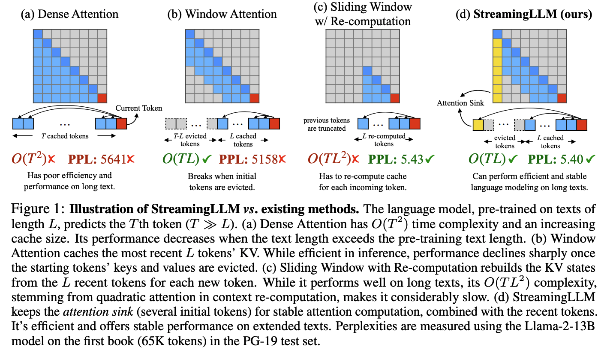
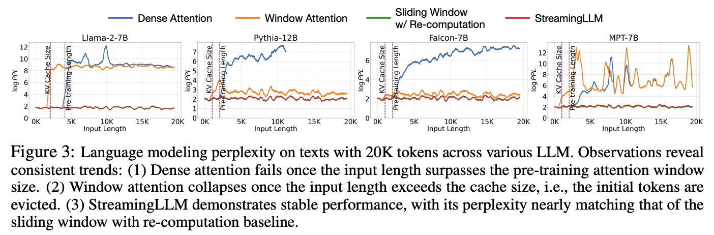
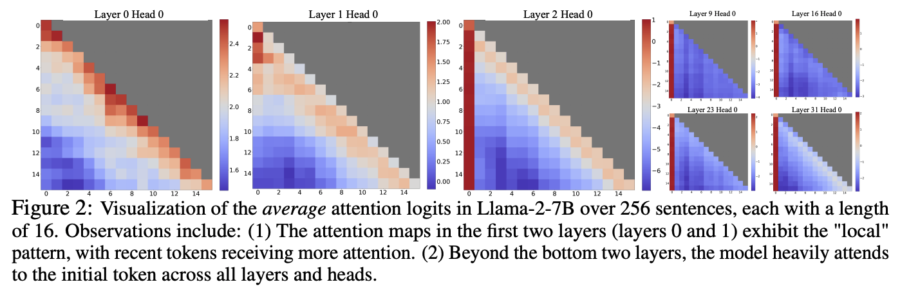

推理¶
基本概念¶
参考
LLM 的推理过程分为两个阶段：
- 预填充（prefill）：处理初始提示词（prompt）。对于每个 token，需要计算其与之前所有 token 的注意力，生成 KV cache。
- 解码（decode）：自回归生成回答。每生成一个新的 token，需要计算其与之前所有 token 的注意力，使用并更新 KV cache。
指标¶
- 吞吐量
- 首个 token 延迟
- token 间延迟
- QPS
量化¶
量化（quantization）是一种通过使用低精度数据类型（如 8 位整数 int8）代替通常的 32 位浮点数（float32）表示权重和激活来降低推理计算和内存成本的技术。
减少位数意味着生成的模型需要更少的内存存储，（理论上）消耗更少的能量，并且矩阵乘法等运算可以用整数运算更快地执行。
量化映射¶
量化将浮点范围 \(x\in[\alpha,\beta]\) 映射到整数范围 \(x_q\in[\alpha_q,\beta_q]\)。数学上，量化过程定义为：
反量化过程定义为：
解线性系统：
得到：
在实践中，我们想要数值 0 在量化后也能准确地表示，因此舍入 \(z\)，得到：
注意这里的 \(z\) 是整数，\(s\) 是正浮点数。
值裁剪¶
在实践中，量化过程可能遇到浮点范围 \([\alpha,\beta]\) 外的 \(x\)，我们将这些 \(x\) 裁剪到 \(\alpha\)（如果 \(x<\alpha\)）或 \(\beta\)（如果 \(x>\beta\)）。也就是量化过程增加了一个裁剪步骤：
其中 \(\text{clip}(x,l,u)\) 函数定义为：
仿射映射¶
量化映射部分描述的映射即为仿射映射。
缩放映射¶
如果量化后的整数类型为有符号整数 INTb，令 \(\alpha_q=-2^{b-1}+1,\beta_q=2^{b-1}-1,\alpha+\beta=0\)，则有 \(z\) 在舍入前即等于 0。这种映射称为缩放映射（scale quantization）。由于此时浮点范围和整数范围都关于 0 对称，它也被称为对称映射（symmetric quantization）。
缩放映射可以提供一个加速效果，因为所有 \(±z\) 的整数加法运算都可以跳过。
注意缩放映射只是仿射映射的一个特例。
量化矩阵相乘¶
请参阅 Quantized Matrix Multiplication。
特殊层的量化¶
对于非线性层（如 ReLU）和其他特殊层（如 BN），一个显而易见的处理方法是反量化这些层的输入张量，这些层使用普通的浮点精度和浮点计算，再量化输出张量。但在大多数模型中，这些特殊层的数量不可忽视，使用此方法会严重降低推理速度。
另一种方法是对每一种特殊层分别作量化处理，请参阅 Quantized ReLU。
量化模式¶
静态量化¶
静态量化（static quantization）：激活张量的缩放和零点是预先计算的，激活张量在内存中可以存储为整数张量，推理过程是无缝衔接的整数运算，推理速度最快。
需要准备一些有代表性的无标注数据，运行推理，收集所有激活张量的统计数字，据此计算缩放和零点。如果数据的代表性不足，或数据分布发生变化，计算得到的缩放和零点可能不反映正确的情景，从而损害推理正确率。
动态量化¶
动态量化（dynamic quantization）：权重张量的缩放和零点是预先计算的，但激活张量的缩放和零点是现场计算的。对于每个量化层，先量化输入张量，由于输出张量的缩放和零点未知，计算得到的是浮点张量。
不需要准备数据，但由于动态量化激活张量的开销，推理速度的提升较小。
校准¶
校准是预先确定张量的取值范围（从而确定张量的缩放和零点）的过程，有以下方法：
- 最小/最大值：计算得到的范围是
[最小观测值，最大观测值]，这种方法对于权重张量效果较好。 - 移动平均最小/最大值：计算得到的范围是
[最小观测值的移动平均值，最大观测值的移动平均值]，这种方法对于激活张量效果较好。 -
直方图：记录值的直方图，包括最小和最大值，然后根据某些标准进行选择：
-
熵：计算得到的范围使得全精度数据与量化数据之间的误差最小。
- 均方误差：计算得到的范围使得全精度数据与量化数据之间的均方误差最小。
- 百分位数：计算得到的范围基于观测值的给定百分位值 \(p\)，其想法是尝试使 \(p%\) 的观测值位于计算的范围内。适用于仿射映射，对于缩放映射则不一定能完全匹配。
量化感知训练¶
量化会损失信息，因而不可避免地降低推理正确率。量化感知训练（quantization aware training，QAT）的想法是在训练过程中就将引入这种损失，从而减少推理正确率的损失。
在量化感知训练中，对于每个变量（权重张量和激活张量），都增加一个量化层和一个反量化层，即：
其中各参数的获取方法和静态量化相同。经过量化和反量化后，张量依然是浮点类型，训练照常进行。唯一的问题是，量化层和反量化层不可微，在实践中，通常采用 STE（straight through estimation）导数近似，即：

除此之外，STE 还允许在量化感知训练中学习缩放，数学推导请参阅 Quantization Aware Training。
量化方法¶
- LLM.int8()（异常值回退到 FP16）[2208.07339]
- 异常值（outlier）指振幅（绝对值）超过特定的阈值、显著偏离总体分布的激活值。异常值显著影响注意力以及总体预测表现。
- 异常值的出现存在稀疏性和系统性：异常值占比约 0.1%，剩余激活值以 8 位表示，因此内存占用砍掉近一半（相比 16 位激活）；异常值出现在几乎所有的序列维度，但被限制在特定的特征维度（即下图中的某几列）。
- 从激活矩阵抽取包含异常值的列，从权重矩阵抽取相应的行。抽取出的子矩阵作 FP16 计算（相应的权重转换为 FP16 类型），剩余的子矩阵作 INT8 逐向量量化计算（见下图）。
- 所有权重以 INT8 类型加载。
- 几乎不损失指标。

-
GPTQ（OBS -> OBQ -> GPTQ）[2210.17323]
- 问题描述：对于神经网络，移除哪些参数，可以引入尽量小的误差（输出的变化）。
- OBS：在近似条件（输出对于参数的一阶和三阶及以上偏导数为 0，仅考虑二阶偏导数）下给出计算最优的被移除参数的公式，以及计算最优的剩余参数更新的公式。参照公式循环移除参数并更新剩余参数，直到指标刚好不低于要求。

- OBS -> OBQ：
- 变更问题描述为：对于网络的某层，以何种顺序量化（量化映射是给定的）权重矩阵的所有元素，可以引入尽量小的误差（输出的变化）。
- 分行并行计算。
- 循环量化最优的元素并更新剩余元素以及 Inverse Hessian。
- 计算复杂度为 \(O(mn^3)\)，其中 \(m\) 是权重矩阵的行数，\(n\) 是列数。

-
OBQ -> GPTQ：
- 顺序量化元素，所有行共享一个 Inverse Hessian（因为它们的输入是共享的）。
- 分批次（块）处理：每量化完一列，立即计算并更新块内的剩余元素以及 Inverse Hessian 的相应部分；每量化完一块，一次性计算并更新后续块的元素以及 Inverse Hessian 的相应部分。
- 对 Inverse Hessian 进行 Cholesky 分解以增强数值稳定性。
- 计算复杂度为 \(O(\max\{mn^2, n^3\})\)，其中 \(m\) 是权重矩阵的行数，\(n\) 是列数。
-
将位宽降低到 3-4 bpw，几乎不损失指标。


-
SmoothQuant（）[2211.10438]
-
QLoRA（基于 NF4 量化的 LoRA 微调和推理）[2305.14314]
- 提出 NF4 数据类型，其对于服从均值为 0 的正态分布的数据是信息论上最优的。NF4 类型的所有值的推导过程和量化过程请参阅 https://www.bilibili.com/video/BV15y411a7so?t=245.6。
- 双重量化：每 64 个元素作 NF4 量化，缩放存储为 32 位浮点数；每 256 个缩放作 FP8 量化，缩放的缩放存储为 32 位浮点数。
- NF4 类型仅作存储用途，参与计算需要先反量化为 BF16 类型。

-
AWQ（）[2306.17874]
-
GGUF 量化方法
量化工具¶
-
bitsandbytes（实现了 LLM.int8() 和 QLoRA；集成到 Hugging Face 生态）
-
AutoGPTQ（实现了 GPTQ；集成到 Hugging Face 生态）
-
AutoAWQ（实现了 AWQ；集成到 Hugging Face 生态）
-
llama.cpp（实现了 GGUF 量化方法）
- k-quants：
加速¶
- speculative decoding（预测接下来的几个 token，类似 CPU 的分支预测）[2211.17192]
- 首先小模型快速生成一系列候选 token，然后大模型对这些候选 token 进行验证。如果验证通过，则直接采用；否则采用大模型生成的 token。
- 小模型可以是压缩过的 NAR 模型、搜索引擎等。
- 可以引入多个小模型，每个小模型都生成一系列候选 token。
- 理想情况下可以减少 2-3 倍的推理延迟。

- KV cache（缓存已计算的 kv 向量）[2211.05102]
- 避免重复计算，以空间换时间。
- 计算复杂度从 \(O(s^2)\) 降低到 \(O(s)\)，其中 \(s\) 是序列长度。
- 缓存大小计算为
cache_size = batch_size * seq_len * num_layers * 2 * hidden_dim * dtype_size。 - 可以量化 KV cache 以减少显存占用。

服务调度¶
- continuous batching（）[]
显存管理¶
- PagedAttention（）[]
上下文长度¶
2309.17453 提出的 StreamingLLM 通过在计算注意力时固定包含前几个 token，提升了注意力计算的稳定性，使得 LLM 推理在超出预训练时的注意力窗口长度后依然稳定。
将 LLM 应用于无限长度的输入流（如图 1a）时，存在三个主要问题：
- 需要 attend 的 token 过多，导致时延过长（逐渐增加）。
- LLM 缓存所有 token 的 kv 状态，导致过多的内存使用。
- 当序列长度超过预训练时的注意力窗口长度时表现下降。
窗口注意力方法 [2004.05150]（如图 1b）维护一个固定大小的滑动窗口，存储最近 n 个 token 的 kv 状态。尽管它可以保持恒定的内存使用和时延，但一旦序列长度超过窗口大小，即使只是驱逐第一个 token 的 kv，困惑度也会骤增。
另一种方法（作为基线）是每次重新计算滑动窗口内所有 token 的 kv 状态（如图 1c）。其提供良好的困惑度表现，但时延过长。

为了理解窗口注意力方法的失败原因，原论文进行了一些探索。简言之，对于高层的 transformer 块，单个 token 的向量很可能已经包含足够的用于预测下一个 token 的信息，因而不再需要 attend，注意力分数以集中到初始 token 的形式被丢弃。一旦初始 token 被驱逐出窗口，注意力分数的分布会发生显著变化，从而严重影响（每一层的）注意力乃至最终预测。
详细解释
图 3 显示了在 20k token 文本上进行语言建模时的困惑度。显而易见的是，对于窗口注意力方法，当文本长度超过缓存大小时，困惑度会激增，这是由于排除了初始 token 导致的。这表明，无论初始 token 与预测 token 的距离如何，它们对于维持 LLM 的稳定性都是至关重要的。

为什么在删除初始 token 的 kv 时 LLM 会出现问题呢？图 2 可视化了 Llama-2-7B 所有层和头的注意力图。我们发现，除了底部两层外，所有层和头的注意力都始终集中于初始 token。这意味着：删除这些初始 token 的 kv 将会删除 softmax 函数中分母的相当部分，导致注意力分数的分布发生显著变化，远离正常推理情形下的预期分布。

为了解释为什么注意力过度集中于初始 token——无论其在语言建模中的语义相关性如何，我们引入了 attention sink 的概念。softmax 函数的性质防止了所有受到关注的 token 具有零值。这需要在所有层的所有头中聚合一些来自其他 token 的信息，即使当前的嵌入对其预测已经包含足够的信息。因此，模型倾向于将不必要的注意力分数给到特定的 token。
由于自回归语言建模的顺序性质，初始 token 对所有后续 token 都是可见的，而后续 token 只对有限的一组后续 token 可见。因此，初始 token 更容易被训练为 attention sink，捕获不必要的注意力。我们已经注意到，LLM 通常被训练为利用多个初始 token 作为 attention sink，而不仅仅是一个。引入 4 个初始 token 作为 attention sink 足以恢复 LLM 的困惑度表现。
对于预训练过的 LLM，启用 streaming 只需要重新引入一些初始 token 的 kv 到注意力计算中，如图 1d 所示。StreamingLLM 的设计可以无缝集成到使用了相对位置编码（例如 RoPE 和 ALiBi）的 LLM 中。
StreamingLLM 采用缓存区中的相对位置而非原始文本中的相对位置，即 attention sink 和滑动窗口总是相邻的。因此对于像 RoPE 这样的编码，我们缓存引入旋转变换之前的 token 的 key。然后在每个解码阶段，我们对缓存区中的键应用旋转变换。
手动引入一个全局可训练的 attention sink token（虚拟 token）是一个潜在的补救方案，它将作为不必要的注意力分数的存储仓库。实验显示，该方案在稳定注意力机制方面非常有效。基于此，我们建议在训练未来的 LLM 时在所有样本的起始位置都添加一个 sink token 以优化 streaming。
另一个方案是使用 SoftMax-off-by-One 这样的变体来替代传统的 SoftMax 函数：
这种变体不要求所有上下文 token 的注意力分数之和为 1——如果当前 token 的向量不需要 attend，那么所有上下文 token 的注意力分数都可以很小。SoftMax1 也等效于在注意力计算中在序列的起始位置添加一个具有全零 kv 状态的虚拟 token。原论文将这种方法称为 Zero Sink。
指标¶
- self-consistency（采样多个回答，选取最一致的回答）[2203.11171]
- LLM cascade（顺序调用从弱到强，同时也是成本从低到高的多个 LLM，当回答足够可靠时返回给用户，并取消后续调用）[2305.05176]
推理工具¶
./llama.cpp/llama-cli --model DeepSeek-R1-GGUF/DeepSeek-R1-UD-IQ1_S/DeepSeek-R1-UD-IQ1_S-00001-of-00003.gguf --cache-type-k q4_0 --threads 10 -no-cnv --prio 2 --n-gpu-layers 14 --temp 0.6 --ctx-size 2048 --seed 3407 --prompt "<｜User｜>Why is the sky blue?<｜Assistant｜>"
./llama-cli --model /workspace/DeepSeek-R1-GGUF/DeepSeek-R1-UD-IQ1_S/DeepSeek-R1-UD-IQ1_S-00001-of-00003.gguf --cache-type-k q4_0 --threads 96 -no-cnv --prio 2 --n-gpu-layers 62 --temp 0.6 --ctx-size 2048 --seed 3407 --prompt "<｜User｜>Why is the sky blue?<｜Assistant｜>"
./llama-cli --model /workspace/DeepSeek-R1-GGUF/DeepSeek-R1-UD-IQ1_S/DeepSeek-R1-UD-IQ1_S-00001-of-00003.gguf --cache-type-k q4_0 --threads 112 -no-cnv --prio 2 --temp 0.6 --ctx-size 8192 --seed 3407 --prompt "<｜User｜>Why is the sky blue?<｜Assistant｜>"
./llama-server --model /workspace/DeepSeek-R1-GGUF/DeepSeek-R1-UD-IQ1_S/DeepSeek-R1-UD-IQ1_S-00001-of-00003.gguf --cache-type-k q4_0 --threads 112 --prio 2 --temp 0.6 --ctx-size 8192 --host 0.0.0.0 --port 8080
./llama-cli --model /workspace/DeepSeek-R1-GGUF/DeepSeek-R1-UD-IQ2_XXS/DeepSeek-R1-UD-IQ2_XXS-00001-of-00004.gguf --cache-type-k q4_0 --threads 112 -no-cnv --prio 2 --temp 0.6 --ctx-size 2048 --seed 3407 --prompt "<｜User｜>Why is the sky blue?<｜Assistant｜>"
cpu memory gpu offload n_ctx tok/s full-cuda 10 128G a100*1 10 8192 1.81/1.06 sm02 14 0.75/1.14 2.09/1.14 4096 1.97/1.13 1.94/1.16 2048 1.80/1.09 1.95/1.11 16 1.88/1.06
20 256G - - 2.56/1.15 a1001 16 3.04/1.54 a1002 32 4.10/2.12 28 8192 3.44/1.98 a100*4 62 2048 7.89/5.55
100 256G - - 2048 9.32/3.79 qy 112 5.99/4.89 (IQ2) 5.11/4.70
96 enough - - 13.15/7.28 h21 h201 32 14.61/7.69 h202 62 16.53/11.75
96 768G 3090*1 8 8192 4.89/3.28